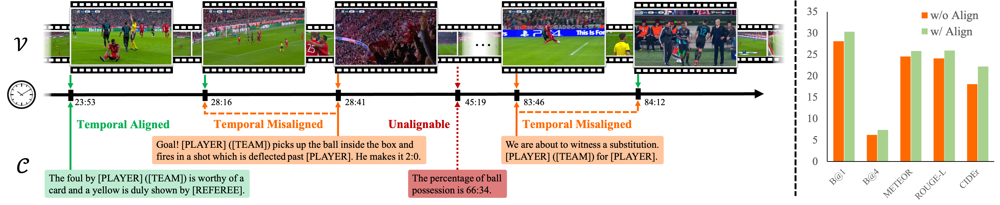
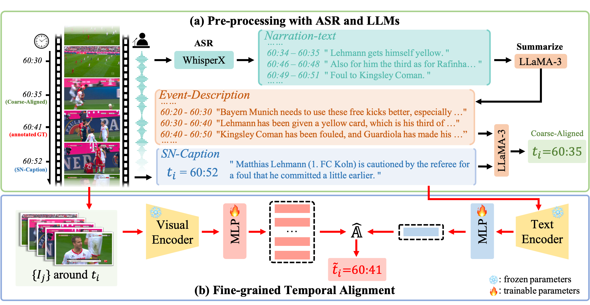
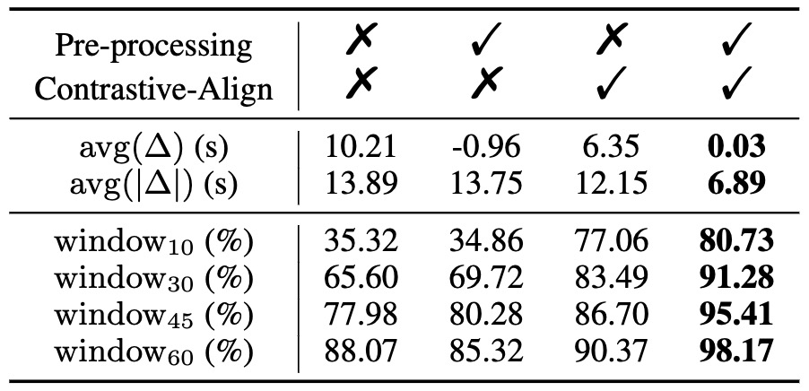
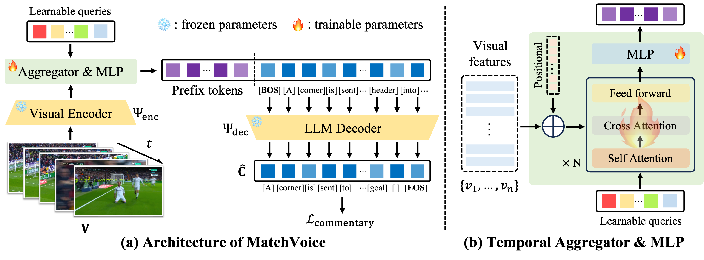
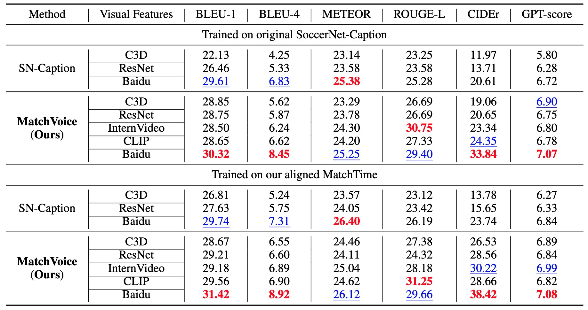
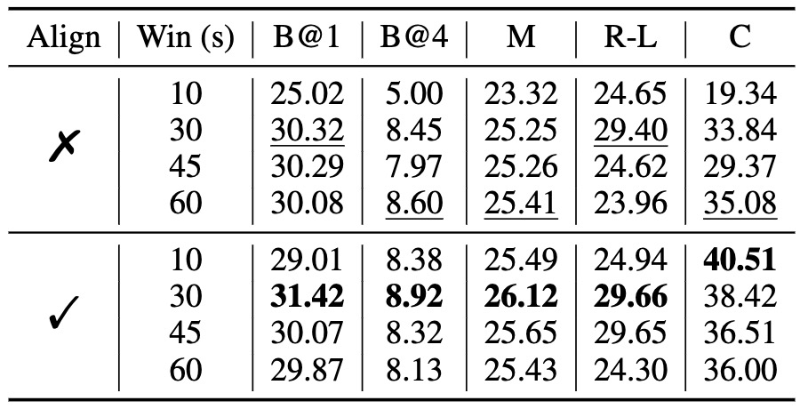
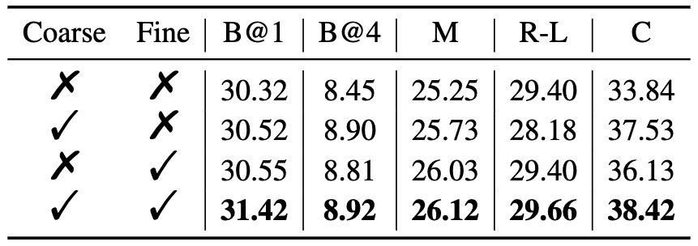
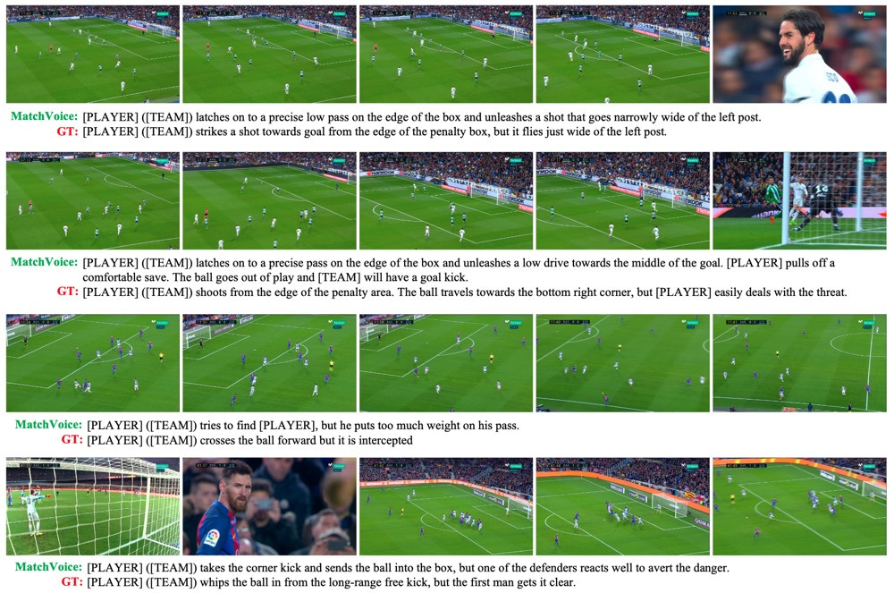
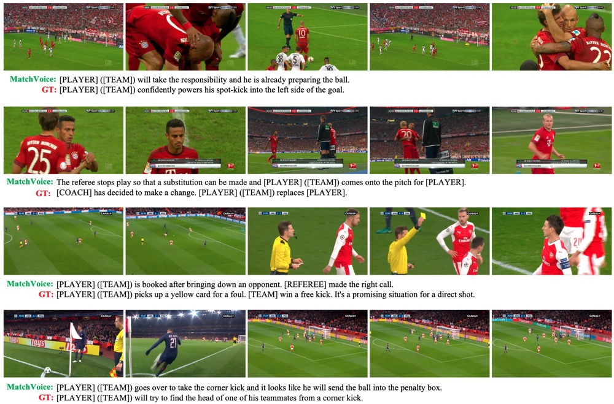

MatchTime: Towards Automatic Soccer Game Commentary Generation
|
|
1Shanghai Jiao Tong University
|
2Shanghai AI Laboratory
|

Overview.
(a) Left: Existing soccer game commentary datasets contain significant misalignment between visual content and text commentaries. We aim to align them to curate a better soccer game commentary benchmark.
(b) Right: While evaluating on manually aligned videos, existing models can achieve better commentary quality in a zero-shot manner. (The temporal window size is set to 10 seconds here.)
Abstract
Soccer is a globally popular sport with a vast audience, in this paper, we consider constructing an automatic soccer game commentary model to improve the audiences’ viewing experience.
In general, we make the following contributions: First, observing the prevalent video-text misalignment in existing datasets, we manually annotate timestamps for 49 matches,
establishing a more robust benchmark for soccer game commentary generation, termed as SN-Caption-test-align;
Second, we propose a multi-modal temporal alignment pipeline to automatically correct and filter the existing dataset at scale,
creating a higher-quality soccer game commentary dataset for training, denoted as MatchTime;
Third, based on our curated dataset, we train an automatic commentary generation model, named MatchVoice.
Extensive experiments and ablation studies have demonstrated the effectiveness of our alignment pipeline, and training model on the curated datasets achieves state-of-the-art performance for commentary generation,
showcasing that better alignment can lead to significant performance improvements in downstream tasks.
Temporal Alignment Pipeline

Temporal Alignment Pipeline.
(a) Pre-processing with ASR and LLMs: We use WhisperX to extract narration texts and corresponding timestamps from the audio, and leverage LLaMA-3 to summarize these into a series of timestamped events, for data pre-processing.
(b) Fine-grained Temporal Alignment: We additionally train a multi-modal temporal alignment model on manually aligned data, which further aligns textual commentaries to their best-matching video frames at a fine-grained level.

Alignment Statistics.
We report the temporal offset statistics on 4 manually annotated test videos (comprising a total of 292 samples).
Δ and windowt represent the temporal offset and the percentage of commentaries that fall within a window of t seconds around the visual key frames, respectively.
MatchVoice Architecture

MatchVoice Architecture Overview.
Our proposed MatchVoice model leverages a pretrained visual encoder to encode video frames into visual features.
A learnable temporal aggregator aggregates the temporal information among these features.
The temporally aggregated features are then projected into prefix tokens of LLM via a trainable MLP projection layer, to generate the corresponding textual commentary.
Results
Quantitative Results

Quantitative comparison on Commentary Generation.
All variants of baseline methods and our MatchVoice are retrained on both the original unaligned SoccerNet-Caption and our temporally aligned MatchTime training sets,
and then evaluated on our manually curated SN-Caption-test-align benchmark.
In each unit, we denote the best performance in RED and the second-best performance in BLUE.
Qualitative Results

Qualitative results on commentary generation.
Our MatchVoice demonstrates advantages in multiple aspects: (a) richer semantic descriptions, (b) full commentaries of multiple incidents in a single video, (c) accuracy of descriptions, and (d) predictions of incoming events.
Ablation Study Results

Ablation studies on window size.
Using the visual content within 30s around key frames yields the best commentary performance, and temporal alignment of data leads to a universal performance improvement.

Ablation studies on alignment strategy.
The quality of temporal alignment is directly reflected in downstream commentary generation tasks: better alignment leads to better commentary generation quality.
More Visualization


More qualitative results on commentary generation.
Acknowledgements
Based on a template by Phillip Isola and Richard Zhang.